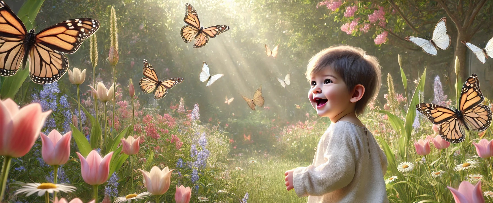

What Should a Child Know by the End of Pre-K?

Pre-Kindergarten
As your little one completes Pre-K, you may be wondering: “What should my child know by now?” Pre-K is a foundational year in early childhood education, setting the stage for future success in kindergarten and beyond. It's not about academic pressure, but about building confidence, curiosity, and core skills through play, exploration, and gentle structure.
In this post, we’ll explore the key milestones and learning goals your child should generally reach by the end of Pre-K.
Language and Literacy Development
By the end of Pre-K, children are building the building blocks of reading and writing. They don’t need to be fluent readers yet, but they should show readiness.
Skills to expect:
⁕ Recognize most uppercase and lowercase letters.
⁕ Begin to understand that letters make sounds (“B says /b/”).
⁕ Write their own name using letters or early attempts at spelling.
⁕ Understand the basics of how books work (reading from left).
⁕ Listen to stories and retell key events using their own words.
⁕ Speak clearly in full sentences and engage in simple conversations.
Tip for parents:
Read aloud daily, label household items, and ask open-ended questions like “What do you think will happen next?”
Math Readiness
Early math isn’t just about numbers - it’s about patterns, logic, and problem-solving. Pre-K learners should begin to develop a strong number sense.
By the end of Pre-K, most children can:
⁕ Count from 1 to 20 aloud.
⁕ Recognize and name numbers 0 to 10.
⁕ Understand one-to-one correspondence (placing one object per count).
⁕ Identify basic shapes: circle, square, triangle, rectangle.
⁕ Compare objects using terms like big/small, more/less, and tall/short.
⁕ Recognize patterns and create simple ones (red-blue-red-blue).
Tip for parents:
Use everyday moments like setting the table or sorting laundry to reinforce math concepts naturally.
Cognitive Skills and Thinking Abilities
Pre-K helps children develop memory, attention, reasoning, and problem-solving skills through play-based activities.
Expect skills like:
⁕ Completing simple puzzles.
⁕ Matching and sorting objects by size, shape, or color.
⁕ Understand cause and effect ("If I push this, it falls").
⁕ Asking “why” questions to explore how the world works.
⁕ Engaging in pretend play that shows creativity and planning.
⁕ Showing curiosity and persistence when facing a challenge.
Tip for parents:
Offer puzzles, blocks, and open-ended questions to build brainpower through play.
Fine and Gross Motor Skills
Pre-K learners develop both small muscle (fine motor) and large muscle (gross motor) skills.
Fine motor skills:
⁕ Hold a pencil, crayon, or marker with a tripod grip.
⁕ Draw basic shapes and simple human figures.
⁕ Use scissors to cut along lines or shapes.
⁕ Trace letters and numbers with guidance.
Gross motor skills:
⁕ Run, jump, and climb with balance.
⁕ Throw, catch, and kick a ball.
⁕ Ride a tricycle or scooter.
⁕ Move rhythmically to music (hop, twirl, dance).
Tip for parents:
Encourage art projects, playdough, and outdoor play to support motor development.
Social and Emotional Skills
This is a huge part of Pre-K readiness. Social and emotional development helps children work with others, manage feelings, and build independence.
A child finishing Pre-K can typically:
⁕ Take turns and share with others.
⁕ Follow simple rules and routines.
⁕ Show empathy and begin to understand others’ feelings.
⁕ Handle separation from parents more easily.
⁕ Use the restroom independently and wash hands afterward.
⁕ Express feelings using words (“I’m sad because I miss my mom”).
Tip for parents:
Talk about feelings often and praise your child’s efforts in being kind, patient, or cooperative.
Science, Nature, and General Knowledge
Pre-K children are naturally curious! They should begin exploring the world around them and asking questions.
They may be able to:
⁕ Identify animals, weather conditions, seasons, and body parts.
⁕ Observe and describe things using their five senses.
⁕ Ask questions like “Why is the sky blue?” or “Where does rain come from?”
⁕ Participate in basic science activities, like planting seeds or mixing colors.
Tip for parents:
Go on nature walks, look at the stars, or explore water and sand play at home.
Self-Help and Daily Life Skills
Independence is key for kindergarten readiness. By the end of Pre-K, children should be managing some self-care tasks on their own.
These include:
⁕ Dressing themselves (zipping, buttoning, or putting on shoes).
⁕ Cleaning up after activities or meals.
⁕ Using the restroom without help.
⁕ Taking care of personal belongings (backpack, coat, lunchbox).
⁕ Following a simple schedule (snack time, clean-up time, nap time).
Tip for parents:
Let your child take the lead in simple routines to build confidence and responsibility.
Final Thoughts
Celebrate Progress, Not Perfection
Remember, every child develops at their own pace. Some may be early readers, while others are just mastering the alphabet. What matters most is progress, curiosity, and a positive attitude toward learning.
The end of Pre-K is not a finish line, it’s a launchpad into lifelong learning. Whether your child is headed to kindergarten or continuing in a homeschool setting, they’ve already built the foundation for success.
Summary Checklist
By the end of Pre-K, most children can:
⁕ Recognize most letters and some letter sounds
⁕ Count to 20 and recognize numbers to 10
⁕ Hold a pencil and cut with scissors
⁕ Follow 2–3 step instructions
⁕ Get along with peers and express emotions
⁕ Show independence in self-care tasks